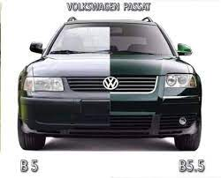

b5.5
B5 Passat models built after late 2000, also known as B5.5 models, received minor styling and mechanical revisions including revised projector-optic headlights, bumpers, taillights, and chrome trim. A 4.0 L W8 engine producing 275 PS (202 kW) was introduced with a luxury version that included standard 4motion all-wheel drive. This engine was intended to be a test bed for Volkswagen Group's new W engine technology, which would later make an appearance on the W12 in the Phaeton and Audi A8, and the W16 engine in the Bugatti Veyron. In 2003, a 2.0 L Turbocharged Direct Injection (TDI) diesel engine producing 136 PS (100 kW) was added (making the Passat the only mid-sized diesel-powered car sold in the U.S.). This variant was available from 2003 until 2005.
A lengthened platform went on to underpin the 'Passat' that was introduced in China in December 1999 by Shanghai-Volkswagen. This long-wheelbase version was rebadged and launched in Europe as the Škoda Superb in 2001. Both have a 100 mm (3.9 in) longer wheelbase and length than the standard B5 Passat. An updated version called the Passat Lingyu was released in late November 2005, which has the 1.8-litre turbocharged EA113, the 2.0 L EA113, and the 2.8 L BBG V6 petrol engines.